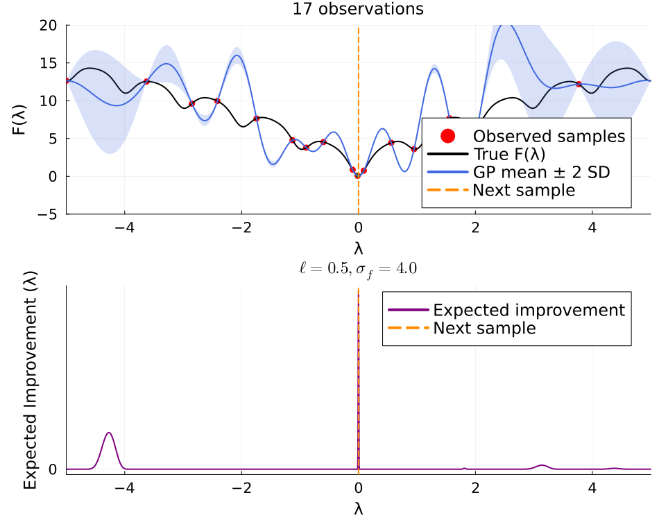
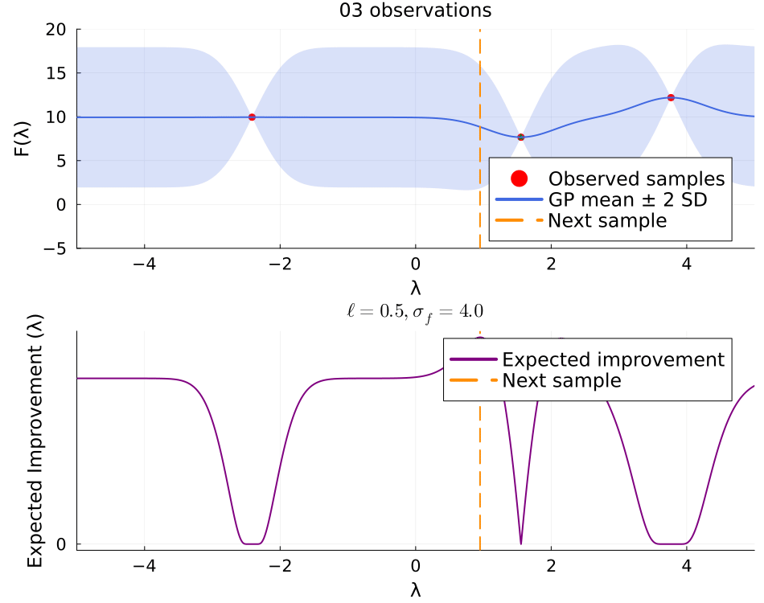
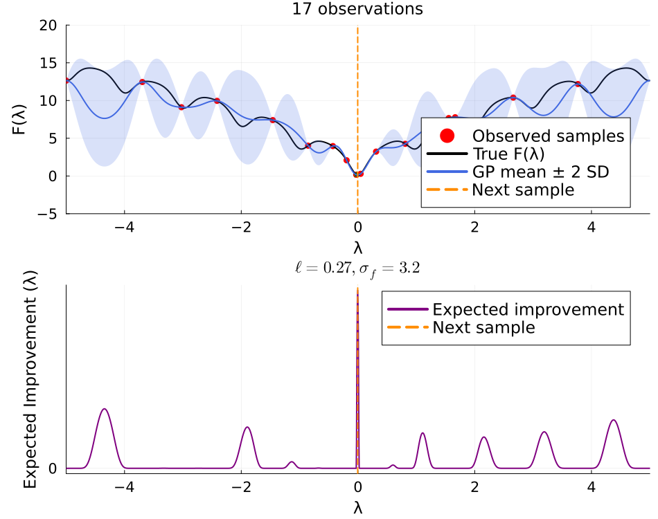
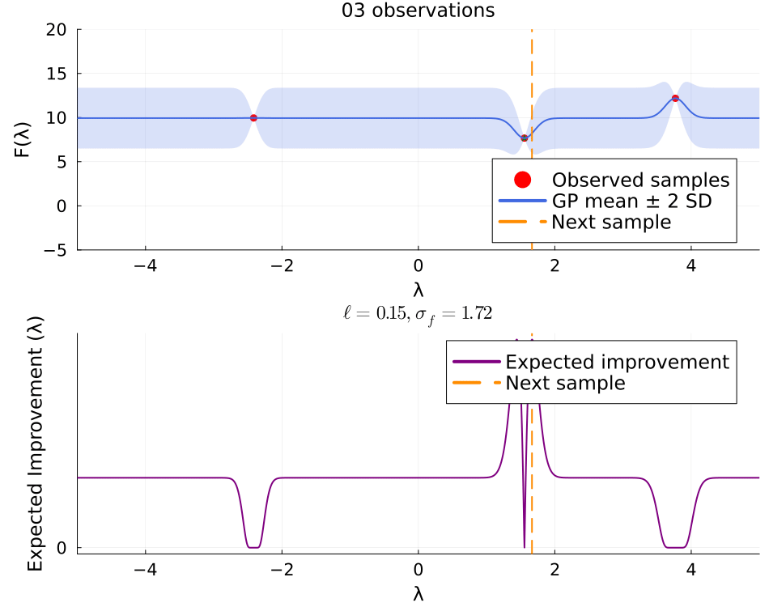

Bayesian Optimization
Illustrate Bayesian optimization of the 1D Ackley function. in Julia.
Example aided by GPT-6.1 Sol(Agent) 2026-10-28.
It implements the Gaussian process (GP) and expected improvement (EI) acquisition function directly without calling any Bayesian optimization package.
At each iteration, it displays:
- the true function, observed samples, GP posterior mean, and a shaded ±2-standard-deviation uncertainty band.
- expected improvement, and a vertical line at the proposed next sample.
The true function is plotted for illustration only; the optimizer uses only the sampled values.
A few details worth noting
- Acquisition maximization is a dense grid search.
This is simple and effective in 1D; the grid spacing determines the precision of each proposed sample.
- Kernel hyperparameter fitting is optional.
With only two or three observations, marginal-likelihood estimates can be unstable. Set tune_hyperparameters=false to use fixed parameters and make the posterior evolution easier to interpret.
The shaded band is pointwise GP uncertainty, not a simultaneous confidence band or a guarantee that the true function lies inside it.
The final frame’s vertical line indicates an additional recommendation that has not yet been evaluated.
This page comes from a single Julia file: bayes-opt-ackley.jl.
You can access the source code for such Julia documentation using the 'Edit on GitHub' link in the top right. You can view the corresponding notebook in nbviewer here: bayes-opt-ackley.ipynb, or open it in binder here: bayes-opt-ackley.ipynb.
Setup
Add the Julia packages used in this demo. Change false to true in the following code block if you are using any of the following packages for the first time.
if false
import Pkg
Pkg.add([
"InteractiveUtils"
"LaTeXStrings"
"LinearAlgebra"
"MIRTjim"
"Plots"
"Random"
"Statistics"
"SpecialFunctions"
])
endTell Julia to use the following packages. Run Pkg.add() in the preceding code block first, if needed.
using InteractiveUtils: versioninfo
using LaTeXStrings: @L_str, latexstring
using LinearAlgebra: cholesky, Symmetric, LowerTriangular, diag, dot
using MIRTjim: jim, prompt
using Plots: plot, plot!, scatter!, vline!, Animation, frame, gif
using Plots: default, gui, savefig
using Plots.PlotMeasures: mm
using Random: MersenneTwister
using Statistics: mean
using SpecialFunctions: erf
default(); default(markersize=3, markerstrokecolor=:auto, label="",
tickfontsize=14, labelfontsize=16, legendfontsize=16, titlefontsize=16)The following line is helpful when running this file as a script; this way it will prompt user to hit a key after each figure is displayed.
isinteractive() ? jim(:prompt, true) : prompt(:draw);Objective: 1D Ackley function; global minimum f(0) = 0.
function ackley(x::Real)
a, b, c = 20.0, 0.2, 2π
return -a * exp(-b * abs(x)) - exp(cos(c * x)) + a + exp(1)
end;Gaussian process with a constant mean and Gaussian kernel:
$k(x, z) = σ_f² \exp(-(x-z)² / (2ℓ²))$
kernel(x, z, ℓ, σf) = σf^2 * exp(-0.5 * ((x - z) / ℓ)^2)
struct GPModel
x::Vector{Float64}
m::Float64
ℓ::Float64
σf::Float64
L::Matrix{Float64}
α::Vector{Float64}
end
"""
Fit a GP for specified hyperparameters.
Returns the model and its log marginal likelihood.
Cholesky solves avoid explicitly forming the inverse covariance.
σn is the observation-noise standard deviation.
"""
function fit_gp(x, y; ℓ = 1.0, σf = 5.0, σn = 1e-6)
x = Float64.(x)
y = Float64.(y)
n = length(x)
m = mean(y) # Simple plug-in estimate of the constant prior mean.
r = y .- m
K = [kernel(xi, xj, ℓ, σf) for xi in x, xj in x]
for i in 1:n
K[i, i] += σn^2 + 1e-10 # noise variance + numerical jitter
end
C = cholesky(Symmetric(K))
α = C \ r
loglik = -0.5 * dot(r, α) - sum(log, diag(C.L)) - 0.5 * n * log(2π)
gp = GPModel(x, m, ℓ, σf, Matrix(C.L), α)
return gp, loglik
end
"""
Select length scale and signal standard deviation
using a small grid search
over the log marginal likelihood.
This keeps the example independent of optimization packages.
The constant mean is held at mean(y) during the search.
"""
function fit_gp_grid(x, y; σn = 1e-6)
lengthscales = exp.(range(log(0.15), log(4.0), length = 18))
signal_stds = exp.(range(log(0.5), log(15.0), length = 12))
best_gp = nothing
best_loglik = -Inf
for ℓ in lengthscales, σf in signal_stds
gp, loglik = fit_gp(x, y; ℓ, σf, σn)
if loglik > best_loglik
best_gp = gp
best_loglik = loglik
end
end
return best_gp
end
"""
Posterior mean and standard deviation of the latent function.
The uncertainty excludes observation noise.
"""
function predict_gp(gp::GPModel, xnew)
Kxs = [kernel(xi, xj, gp.ℓ, gp.σf) for xi in gp.x, xj in xnew]
μ = gp.m .+ Kxs' * gp.α
# diag(Kss - Ksx * inv(Kxx) * Kxs), without an inverse.
V = LowerTriangular(gp.L) \ Kxs
variance = gp.σf^2 .- vec(sum(abs2, V; dims = 1))
# Clip small negative values caused by roundoff.
σ = @. sqrt(max(variance, 0))
return μ, σ
end;Expected improvement for minimization
- improvement = fbest - μ - ξ
- EI = improvement * Φ(z) + σ * φ(z)
- z = improvement / σ
- ξ > 0 encourages some additional exploration.
normal_pdf(z) = exp(-0.5 * z^2) / sqrt(2π)
normal_cdf(z) = 0.5 * (1 + erf(z / sqrt(2)))
function expected_improvement(μ, σ, fbest; ξ = 0.01)
return map(μ, σ) do mi, si
improvement = fbest - mi - ξ
if si ≤ 1e-12
max(improvement, 0.0)
else
z = improvement / si
max(0, improvement * normal_cdf(z) + si * normal_pdf(z))
end
end
end;Plot the posterior and acquisition function
function plot_step(grid, truth, x, y, μ, σ, ei, xnext, gp, step)
p1 = plot(
xaxis = ("λ", (first(grid), last(grid)), -4:2:4),
yaxis = ("F(λ)", (-5, 20), -5:5:20),
title = "$(string(length(x),pad=2)) observations",
legend = :bottomright,
)
scatter!(p1,
x, y;
color = :red,
markersize = 5,
label = "Observed samples",
)
scatter!( # show best value so far in green
p1, [x[argmin(y)]], [minimum(y)];
color = :green,
marker = :star,
markersize = 5,
)
step == 14 && # only show true function at end!
plot!(
p1, grid, truth;
color = :black,
linewidth = 2,
label = "True F(λ)", # Ackley function
)
plot!(p1,
grid, μ;
ribbon = 2 .* σ,
fillalpha = 0.20,
color = :royalblue,
linewidth = 2,
label = "GP mean ± 2 SD",
)
vline!(
p1, [xnext];
color = :darkorange,
linestyle = :dash,
linewidth = 2,
label = "Next sample",
)
p2 = plot(
grid, ei;
color = :purple,
linewidth = 2,
left_margin = 10mm,
label = "Expected improvement",
xaxis = ("λ", (first(grid), last(grid)), -4:2:4),
yaxis = ("Expected Improvement (λ)", [0]),
title = latexstring("ℓ=$(round(gp.ℓ; digits = 2)), " *
"σ_f=$(round(gp.σf; digits = 2))"),
legend = :topright,
)
vline!(
p2, [xnext];
color = :darkorange,
linestyle = :dash,
linewidth = 2,
label = "Next sample",
)
p = plot(p1, p2; layout = (2, 1), size = (950, 750))
return p
end;Sequential Bayesian optimization demo
function demo_bo(;
seed = 2,
ninitial = 3,
nsteps = 14,
bounds = (-5.0, 5.0),
ngrid = 2001,
ξ = 0.01,
tune_hyperparameters = true,
fixed_ℓ = 0.5,
fixed_σf = 4.0,
)
@assert ninitial ≥ 2
@assert nsteps ≥ 0
@assert bounds[1] < bounds[2]
@assert ngrid > ninitial + nsteps
rng = MersenneTwister(seed)
lo, hi = bounds
# Start with a few uniformly random evaluations.
x = sort(lo .+ (hi - lo) .* rand(rng, ninitial))
y = ackley.(x)
grid = collect(range(lo, hi; length = ngrid))
truth = ackley.(grid) # Visualization only
p = Vector{Any}(undef, nsteps+1)
for step in 0:nsteps
gp = tune_hyperparameters ? fit_gp_grid(x, y) :
first(fit_gp(x, y; ℓ = fixed_ℓ, σf = fixed_σf))
μ, σ = predict_gp(gp, grid)
ei = expected_improvement(μ, σ, minimum(y); ξ)
# Maximize acquisition on a dense 1D grid.
# Prevent selecting a location already sampled.
scores = copy(ei)
for j in eachindex(grid)
if any(abs(grid[j] - xi) < 1e-8 for xi in x)
scores[j] = -Inf
end
end
jnext = argmax(scores)
xnext = grid[jnext]
p[step+1] = plot_step(grid, truth, x, y, μ, σ, ei, xnext, gp, step)
step == nsteps && break
push!(x, xnext)
push!(y, ackley(xnext))
end
return (; x, y, p)
end;Demo with fixed kernel parameters
result1 = demo_bo(; tune_hyperparameters = false)
result1.p[end]
anim1 = Animation()
for p in result1.p
frame(anim1, p)
end
gif(anim1, "ackley_bo.gif"; fps = 2)
ibest = argmin(result1.y)
"Best observed: x = $(round(result1.x[ibest]; digits=5)), " *
"f(x) = $(round(result1.y[ibest]; digits = 5))""Best observed: x = -0.015, f(x) = 0.07195"Demo with tuned kernel parameters
result2 = demo_bo(tune_hyperparameters = true)
result2.p[end]
anim2 = Animation()
for p in result2.p
frame(anim2, p)
end
gif(anim2, "ackley_bo-tune.gif"; fps = 2)
ibest = argmin(result1.y)
"Best observed: x = $(round(result1.x[ibest]; digits=5)), " *
"f(x) = $(round(result1.y[ibest]; digits = 5))""Best observed: x = -0.015, f(x) = 0.07195"This page was generated using Literate.jl.